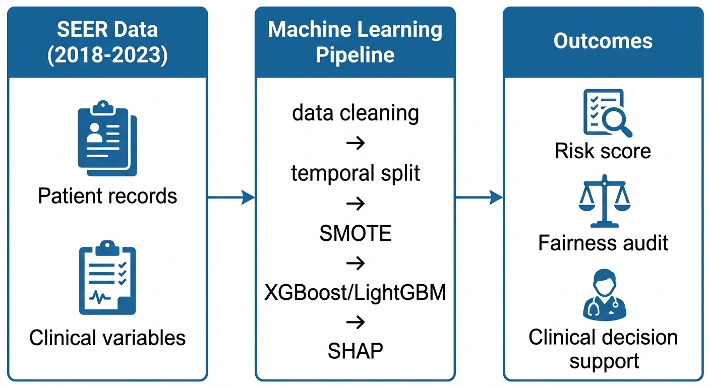

Single pain point
Which newly diagnosed breast cancer patients are at high risk of cancer-specific death based on information available at diagnosis?
M1 · Problem Definition
The project starts with one focused question: can diagnosis-time clinical and demographic variables predict breast cancer-specific mortality in SEER patients?
Early risk stratification helps clinicians prioritize follow-up, treatment discussion, and resource allocation. The target is not all-cause death; it is cancer-specific death, which is more aligned with breast cancer prognosis.

Proposal logic
Which newly diagnosed breast cancer patients are at high risk of cancer-specific death based on information available at diagnosis?
The task is intentionally binary and focused. The project avoids expanding into general survival analysis, multi-label prediction, or causal treatment recommendation.
The final output must be understandable to clinical stakeholders: calibrated risk, risk tier, and feature-driven explanation.
Can a machine learning model trained on SEER clinical and demographic features available at diagnosis, with strict temporal validation and interpretability, accurately predict breast cancer-specific mortality?
Advanced stage, triple-negative subtype, and nodal involvement are expected to be the strongest mortality predictors. Demographic variables such as race and income may add signal because they proxy access, screening, and structural inequities.
Because the positive class is rare, the project prioritizes PR-AUC, minority-class F1, sensitivity at high specificity, and Brier Score. Accuracy is not suitable as the primary metric.
SEER data is de-identified. The model is framed as decision support only. Fairness auditing across race, age, and income groups is treated as a required part of the research lifecycle.
Research design checklist
| Design element | Decision | Why it matters |
|---|---|---|
| Observation unit | One patient-level breast cancer diagnosis profile. | Prevents the model from mixing repeated records from the same patient across evaluation periods. |
| Prediction moment | Diagnosis-time risk assessment. | Makes the output actionable before long-term outcomes are known. |
| Outcome definition | Cancer-specific death rather than all-cause death. | Focuses the task on breast cancer prognosis instead of unrelated competing mortality. |
| Generalization test | Train on older diagnosis years and evaluate on later diagnosis years. | Simulates future deployment more honestly than random splitting. |